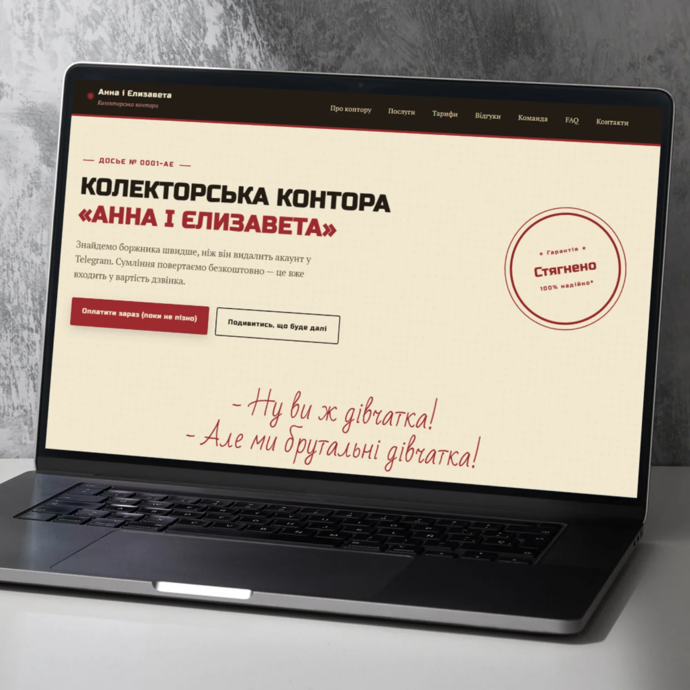
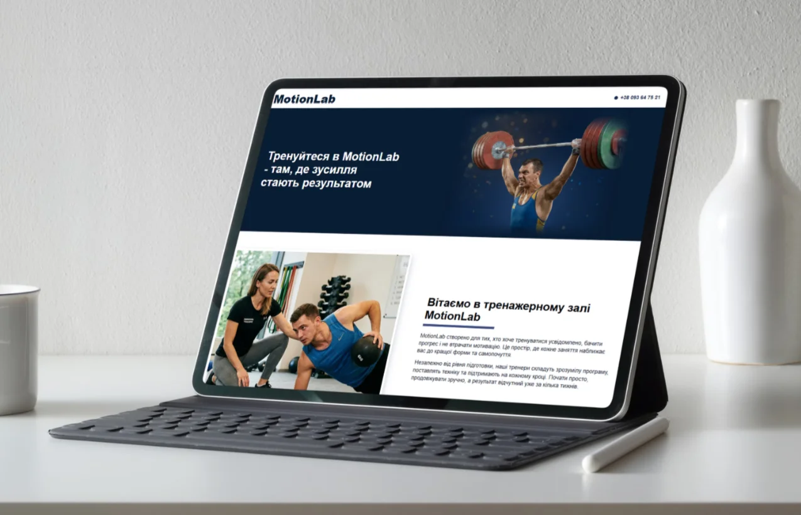
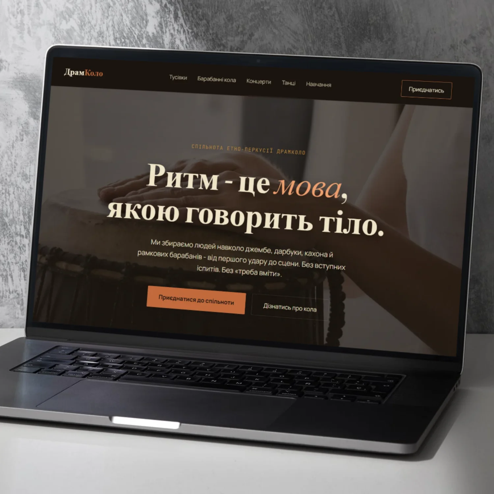
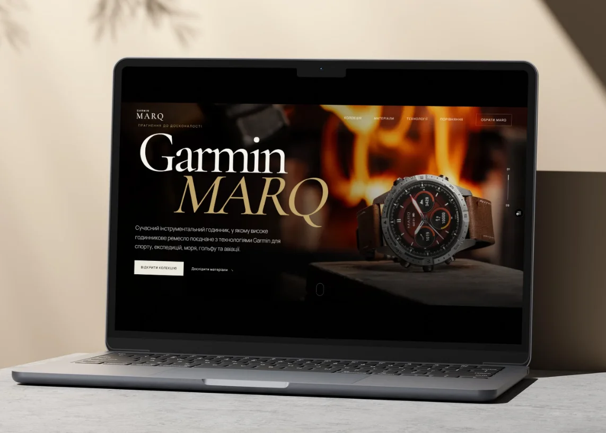
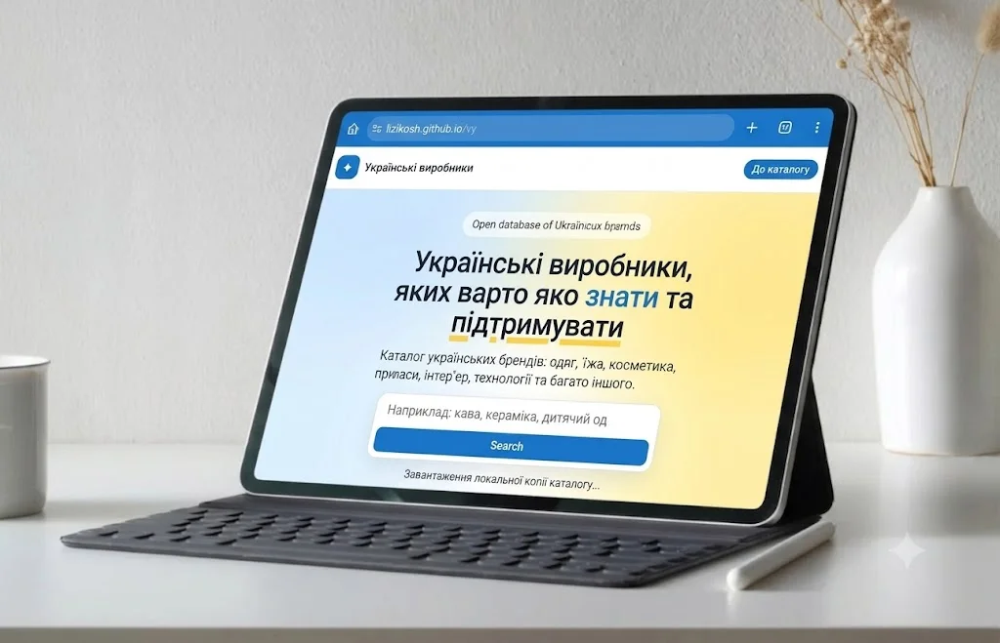
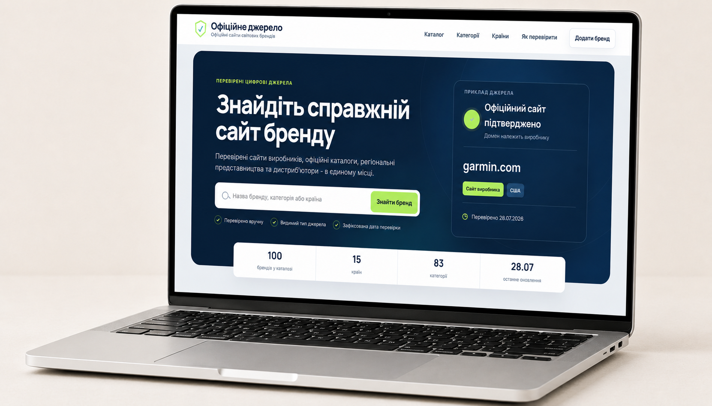

Колекторська контора «Анна і Єлизавета»
Лендинг у стилізованій ретро-візуальній подачі з hero-блоком, навігацією, акцентною типографікою, CTA-кнопками та структурою під послуги, тарифи, відгуки, команду й контакти.
Переглянути сайт →Портфоліо · Вебпроєкти
Сайти, лендинги та сторінки: структура, подача, адаптивність і практична робота з контентом.
Вибрані роботи
Кожен проєкт можна відкрити за посиланням у картці.
Тут можете переглянути приклади сайтів, сторінок, лендингів, де видно структуру, візуальну подачу, адаптацію та практичну роботу з контентом.

Лендинг у стилізованій ретро-візуальній подачі з hero-блоком, навігацією, акцентною типографікою, CTA-кнопками та структурою під послуги, тарифи, відгуки, команду й контакти.
Переглянути сайт →
Сторінка тренажерного залу з великим hero-банером, впізнаваним логотипом, контактним блоком у шапці та презентаційним першим екраном для знайомства з брендом.
Переглянути сайт →
Сторінка ДрамКоло: спільноти людей, котрі захоплюються грою на етнічних барабанах (джембе, дарбука, табли, кахон та ін.
Переглянути сайт →
Односторінковий промо-сайт про преміальні смарт-годинники Garmin MARQ - найкраще, що є в індустрії смарт-годинників.
Переглянути сайт →
Українські виробники, яких варто знати та підтримувати: одяг, їжа, косметика, прикраси, інтер’єр, технології та багато іншого.
Переглянути сайт →
Знайдіть справжній сайт бренду. Перевірені сайти виробників, офіційні каталоги, регіональні представництва та дистриб’ютори - в єдиному місці.
Переглянути сайт →